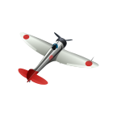
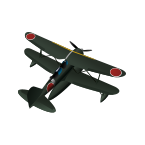
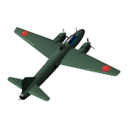
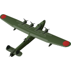
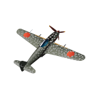
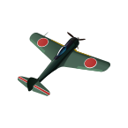

|  | A5M Одноместный палубный истребитель Первый в мире палубный истребитель-моноплан. Обладал хорошей устойчивостью и маневренностью, был прост в технике пилотирования. Применялся в начальный период войны на Тихом океане. В 1945 г. использовались подразделениями «камикадзе». |
Страна : Япония Тип :Истребитель Год : 1937 |
|  | F1M2 Одномоторный цельнометаллический биплан с основным центральным поплавком и двумя вспомогательными подкрыльевыми поплавками. Разрабатывался как специализированный катапультный разведчик-корректировщик артиллерийского огня для линкоров и тяжёлых крейсеров Японского Императорского Флота. |
Страна : Япония Тип : Гидроплан Год : 1940 |
|  | G4M1 Дальние двухмоторные бомбардировщики-торпедоносцы Mitsubishi G4M при относительно небольшой бомбовой нагрузке в 1000 кг отличались огромной дальностью полета порядка 6000 км, что сравнимо с дальностью полета стратегических бомбардировщиков. Из-за необходимости соблюдения Вашингтонского морского соглашения Япония сильно отставала в строительстве флота, поэтому, чтобы защититься от кораблей вероятного противника |
Страна : Япония Тип :Бомбардировщик Год : 1941 |
|  | H6K4 Летающая лодка Каваниси тип 97 модель 22, Kawanishi H6K4 (codename «Mavis») Летающие лодки H6K широко использовались в ходе начального этапа войны на Тихом океане. Занимались дальней разведкой, сопровождением конвоев, поиском подводных лодок, наносили бомбовые удары, проводили поисково-спасательные операции. |
Страна : Япония Тип :Бомбардировщик, Летающая лодка, Торпедоносец Год : 1939 |
|  | Ki-61 Легкий многоцелевой истребитель Ki-61 Hien («Ласточка») имел хорошее вооружение и отличался высокой защищенностью. Создатели Ki-61 с самого начала позаботились о протектировании топливных баков и обеспечении защиты пилота. |
Страна : Япония Тип :Истребитель Год : 1943 |
|  | Ki-43-II Одноместный японский истребитель Nakajima Ki-43 Hayabusa (Сокол сапсан) создан для замены Ki 27 по контракту ВВС Императорской армии Японии. Конструкция Ki 27 была столь удачной, что, не прибегая к обычному для Японии конкурсу на производство самолета... |
Страна : Япония Тип :Истребитель Год : 1942 |